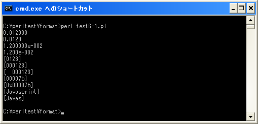

精度/最大幅
フォーマット指定子のオプションの1つである精度/最大幅について確認します。
%[フラグ][最小幅][.精度/最大幅]型指定子
このオプション項目は、数値に対して設定した場合は精度となり、文字列に対して設定した場合は最大幅となります。
浮動小数点数に対して設定
浮動小数点数に対して精度を指定した場合は、小数点以下の桁数となります。
まず固定小数点形式の浮動小数点に対して試してみます。
printf("%f¥n", 0.012);
printf("%.0f¥n", 0.012);
printf("%.1f¥n", 0.012);
printf("%.2f¥n", 0.012);
printf("%.3f¥n", 0.012);
printf("%.4f¥n", 0.012);
上記では型変換子として「%f」を指定し、さらに精度を0から4までの数値で順に指定しています。結果は次のようになります。
0.012000 0 0.0 0.01 0.012
指定した精度によって結果の小数点以下の桁数が変化することが確認できます。では今度は指数形式の浮動小数点で試してみます。
printf("%e¥n", 0.012);
printf("%.0e¥n", 0.012);
printf("%.1e¥n", 0.012);
printf("%.2e¥n", 0.012);
printf("%.3e¥n", 0.012);
上記では型変換子として「%e」を指定し、さらに精度を0から4までの数値で順に指定しています。結果は次のようになります。
1.200000e-002 1e-002 1.2e-002 1.20e-002 1.200e-002
指定した精度によって結果の小数点以下の桁数が変化することが確認できます。
整数に対して設定
整数に対して精度を指定した場合は、数値部分の桁数となります。数値部分が精度に指定した桁よりも少ない場合は0詰めとなります。数値部分が精度よりも多い場合は何も変更は加えられません。
printf("[%.2d]¥n", 123);
printf("[%.4d]¥n", 123);
printf("[%.6d]¥n", 123);
上記では型変換子として「%d」を指定し、さらに精度を変化させて指定しています。結果は次のようになります。
[123] [0123] [000123]
数値部分が精度で指定した値よりも少ない場合は変化ありませんが、精度で指定した値の方が大きい場合は0詰めで表示されます。
printf("[%8.2d]¥n", 123);
printf("[%8.4d]¥n", 123);
printf("[%8.6d]¥n", 123);
今度は最小幅と合わせて指定した場合です。結果は次のようになります。
[ 123] [ 0123] [ 000123]
次は16進数の数値に対して設定してみます。
printf("[%.6x]¥n", 123);
printf("[%#.6x]¥n", 123);
上記では型変換子として「%x」を指定し、さらに精度を設定しています。結果は次のようになります。
[00007b] [0x00007b]
1つはフラグとして「#」を合わせて指定しています。結果として数値の先頭に「0x」が付きますが、精度として指定した桁数はあくまで数値部分に対して有効となります。
文字列に対して設定
文字列に対しては精度ではなく最大幅として機能します。設定した最大幅よりも文字列が長い場合は最大幅で切り捨てられます。
printf("[%s]¥n", "Javascript");
printf("[%.5s]¥n", "Javascript");
printf("[%.15s]¥n", "Javascript");
上記では型変換子として「%s」を指定し、さらに精度を設定しています。結果は次のようになります。
[Javascript] [Javas] [Javascript]
最大幅が文字数よりも少ない場合は文字列が最大幅で切り捨てられます。最大幅が文字数よりも多い場合は何も変更は加えられません。
サンプルプログラム
では簡単なプログラムで確認して見ます。
use strict;
use warnings;
use utf8;
binmode STDIN, ':encoding(cp932)';
binmode STDOUT, ':encoding(cp932)';
binmode STDERR, ':encoding(cp932)';
printf("%f¥n", 0.012);
printf("%.4f¥n", 0.012);
printf("%e¥n", 0.012);
printf("%.3e¥n", 0.012);
printf("[%.4d]¥n", 123);
printf("[%.6d]¥n", 123);
printf("[%8.6d]¥n", 123);
printf("[%.6x]¥n", 123);
printf("[%#.6x]¥n", 123);
printf("[%s]¥n", "Javascript");
printf("[%.5s]¥n", "Javascript");
上記を「test6-1.pl」の名前で保存します(文字コードはUTF-8です)。そしてコマンドプロンプトを起動し、プログラムを保存したディレクトリに移動してから次のように実行して下さい。

( Written by Tatsuo Ikura )

著者 / TATSUO IKURA
初心者～中級者の方を対象としたプログラミング方法や開発環境の構築の解説を行うサイトの運営を行っています。